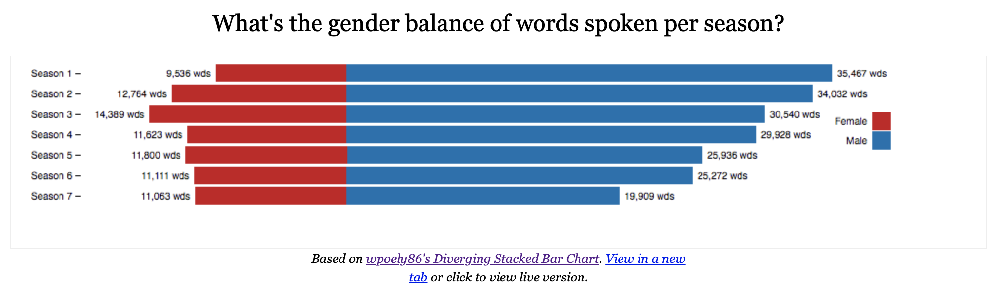
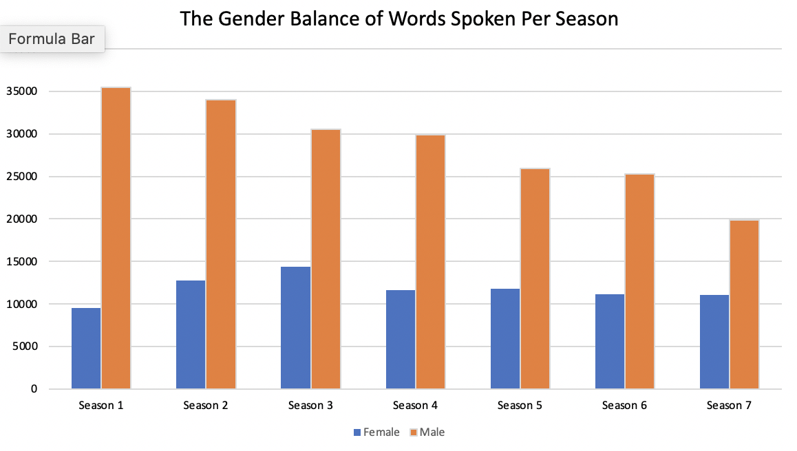

The Game of Thrones is an American fantasy drama created by HBO. It is based on myth fiction and the background of the middle ages. In the seventh season, the territories that many princes and Marquises had controlled gradually fell into the hands of the two queens, Cersei Lannister and Daenerys Targaryen. The woman suddenly stands in front of the plot. It reminds me that in today's society, more and more people emphasize that all TV shows should pay attention to diversity, regardless of race or gender. I think Game of Thrones is also trying to do this.
On the whole, there is a significant gap in the number of words between genders. Referring to Jeffrey Lancaster's project posted on the Github website, we can see that from his chart of words about the genders of characters, the number of women lines is obviously lower than that of men. Although the overall words generally decreased each season, male characters still have more words than females. 
Nevertheless, the writers also tried to balance the number of lines between them. I remade Jeffrey Lancaster's chart into a bar graph in Excel so that the trend of words count can be more clear.

We can see a big gap between the male's and female's lines in the first season. I also calculated the average number of male and female lines, which are 11755 and 2872. Even if the difference between them was 16971, which was even more than that of female lines, in the seventh season, the difference is much smaller. The writers are balancing the number of lines of both sides.
I believe that the word gap between the genders should be related to the background of the story. But I don't think it's a problem to blame because the story of the Game of Thrones is set in the middle ages. At that time, society was dominated by men, and women's status was not as good as men's. Therefore, the plot and the characters should be male-oriented. But probably considering the balance of diversity, In the seventh season, women also took part in the fight, vaguely revealing the meaning of equality between men and women.
To sum up, subject to the story background and character setting, the gap between male and female characters in this TV series is obvious, but it is also understandable. Films and TV shows have a significant influence on social values. We should emphasize the diversity and balance of roles.